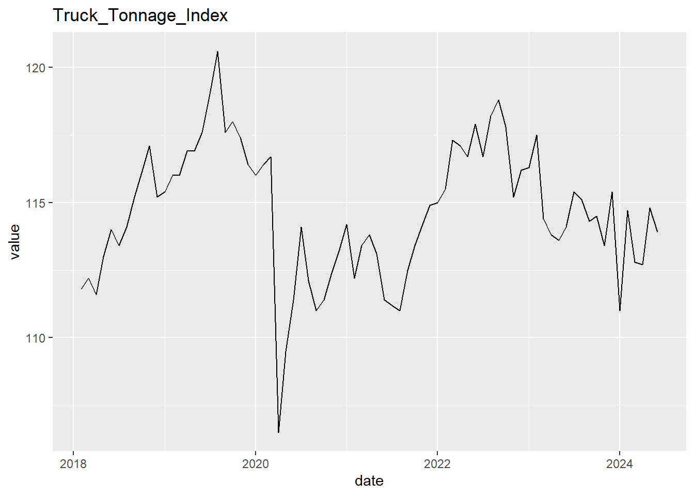
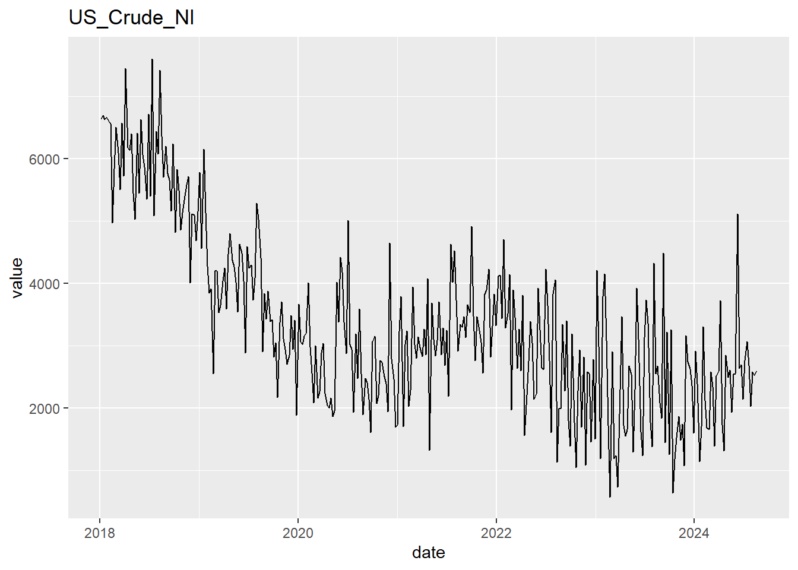
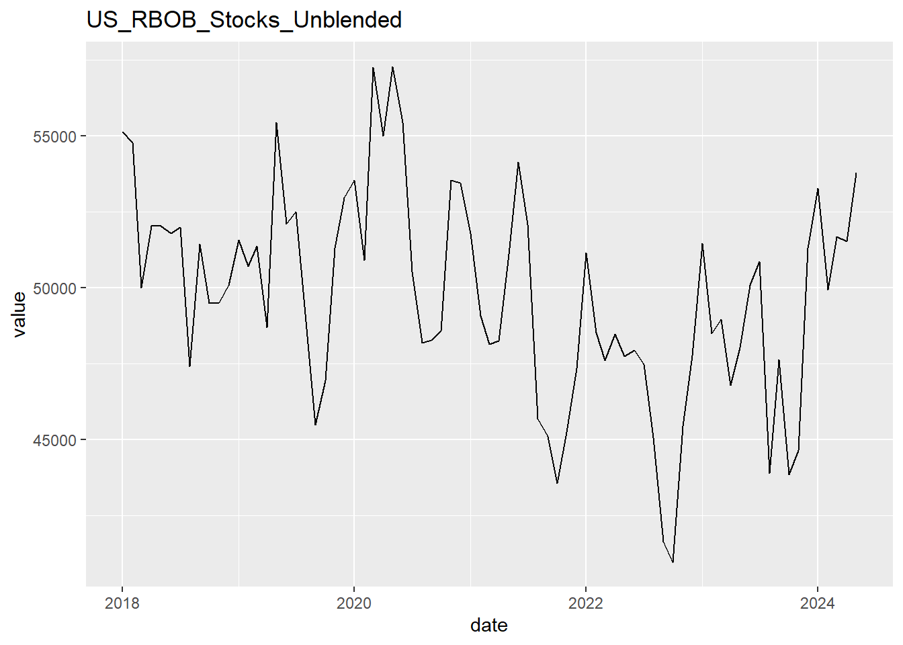
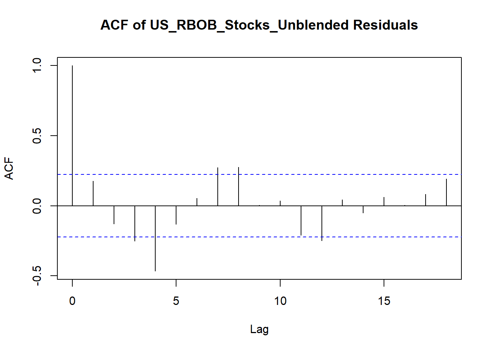

library(tidyquant)
library(tidyverse)
library(RTL)
library(tsibble)
library(feasts)
library(slider)
library(httr)
library(curl)
library(zoo)
library(forecast)
library(corrplot)
library(broom)
library(car)
library(ggfortify)
library(tseries)
# Note that sometimes the lack of an API sometimes necessitates loading from excel worksheets.
# This is not the equivalent of modeling in excel, it's instead just another mechanism for us to load data automatically into the model.
library(xlsx)
EIA_API <- "UKCNbCB0m8aixfPBshQU3Jdlz2uZsEbG2HebvhHX"Report
# Yahoo Finance
tickers <- c("RB=F", "HO=F", "CL=F", "NG=F")
start_date <- '2018-01-01'
price_data_in <- tq_get(tickers, get = "stock.prices", from = start_date) %>%
dplyr::mutate(symbol = case_when(symbol == tickers[1] ~ "RBOB",
symbol == tickers[2] ~ "Heating_Oil",
symbol == tickers[3] ~ "WTI",
symbol == tickers[4] ~ "Natural_Gas"))Registered S3 method overwritten by 'parsnip':
method from
autoplot.glmnet ggfortifyeia_tickers <- tribble(~ticker, ~name, "PET.WTTSTUS1.W", "US_Crude_Inventory",
"PET.MCRFPUS1.M", "US_Crude_Prod",
"NG.NW2_EPG0_SWO_R48_BCF.W", "Lower48NGStorage",
"PET.WCRNTUS2.W", "US_Crude_NI",
"PET.WRPNTUS2.W", "US_Petrol_Products_NI",
"PET.WGFRPUS2.W", "US_Gasoline_Production",
"PET.MGFSTUS1.M", "US_Gasoline_Stocks_Blended",
"PET.M_EPOBGRR_SAE_NUS_MBBL.M", "US_RBOB_Stocks_Unblended",
"PET.MO5ST_NUS_1.M", "US_Conventional_Stocks_Unblended",
"PET.WPULEUS3.W", "Pct_Operable_Utilization"
)
EIA_Data <- eia2tidy_all(eia_tickers, EIA_API)
EIA_Data %>% group_by(series) %>% dplyr::mutate(temp = 1, temp = cumsum(temp)) %>%
dplyr::filter(temp == 1) %>%
dplyr::select(-temp)# A tibble: 10 × 3
# Groups: series [10]
date series value
<date> <chr> <dbl>
1 2024-08-16 US_Crude_Inventory 1658445
2 2024-05-01 US_Crude_Prod 408522
3 2024-08-16 Lower48NGStorage 3299
4 2024-08-16 US_Crude_NI 2607
5 2024-08-16 US_Petrol_Products_NI -5432
6 2024-08-16 US_Gasoline_Production 9768
7 2024-05-01 US_Gasoline_Stocks_Blended 16804
8 2024-05-01 US_RBOB_Stocks_Unblended 53778
9 2024-05-01 US_Conventional_Stocks_Unblended 159919
10 2024-08-16 Pct_Operable_Utilization 92.3fred_tickers <- c("IPMINE", "GDP", "TRUCKD11")
fred_data <- tq_get(fred_tickers, get = "economic.data", from = start_date) %>%
dplyr::mutate(symbol = case_when(symbol == fred_tickers[1] ~ "Mining_Production_Index",
symbol == fred_tickers[2] ~ "US_GDP",
symbol == fred_tickers[3] ~ "Truck_Tonnage_Index")) %>%
dplyr::rename(series = symbol, value = price)
# I'd recommend incorporating Baltic Dry Index (BDI) for shipping by sea. Unfortunately these are metrics which require subscriptions, and as a result aren't included in this report.add_ret_metrics <- function(df_in){
# Accepts a df with columns value, series, date
# Adds returns and cumulative return metrics for value.
df_in %>%
group_by(series) %>%
arrange(series, date) %>%
dplyr::mutate(ret_pct = (value-lag(value))/lag(value),
ret_log = log(value/lag(value))) %>%
tidyr::drop_na() %>%
dplyr::mutate(cret_pct = cumprod(ret_pct+1),
cret_log = cumsum(ret_log),
year_month = yearmonth(date)) %>%
return()
}
price_data <- price_data_in %>%
dplyr::select(date, series = symbol, value = close, volume)
# rm(price_data_in)
fundamentals_data <- EIA_Data %>%
add_ret_metrics()Warning: There was 1 warning in `dplyr::mutate()`.
ℹ In argument: `ret_log = log(value/lag(value))`.
ℹ In group 9: `series = "US_Petrol_Products_NI"`.
Caused by warning in `log()`:
! NaNs produced# rm(EIA_Data)
# 3:2:1 Crack Spread used here. Setting below can be used to adjust the crack spread to other ratios, such as 5:3:2
spread_ratio <- c(3,2,1)
spread_data <- price_data %>%
pivot_wider(names_from = series, id_cols = date, values_from = value) %>%
dplyr::mutate(Crack_Spread = ((spread_ratio[2]*42*RBOB +
spread_ratio[3]*42*Heating_Oil) -
WTI*spread_ratio[1])/
spread_ratio[1])
price_data <- spread_data %>% dplyr::select(date, value = Crack_Spread) %>%
dplyr::mutate(series = "Crack_Spread", volume = 0) %>%
bind_rows(price_data) %>%
add_ret_metrics()Warning: There was 1 warning in `dplyr::mutate()`.
ℹ In argument: `ret_log = log(value/lag(value))`.
ℹ In group 5: `series = "WTI"`.
Caused by warning in `log()`:
! NaNs producedEIA_Data %>% pivot_wider(names_from = series, id_cols = date, values_from = value) %>%
dplyr::arrange(desc(date))# A tibble: 3,365 × 11
date US_Crude_Inventory US_Crude_Prod Lower48NGStorage US_Crude_NI
<date> <dbl> <dbl> <dbl> <dbl>
1 2024-08-16 1658445 NA 3299 2607
2 2024-08-09 1663659 NA 3264 2529
3 2024-08-02 1666068 NA 3270 2586
4 2024-07-26 1664122 NA 3249 2034
5 2024-07-19 1665878 NA 3231 2685
6 2024-07-12 1669754 NA 3209 3073
7 2024-07-05 1658697 NA 3199 2761
8 2024-06-28 1655662 NA 3134 2146
9 2024-06-21 1668222 NA 3102 2701
10 2024-06-14 1658780 NA 3045 2636
# ℹ 3,355 more rows
# ℹ 6 more variables: US_Petrol_Products_NI <dbl>,
# US_Gasoline_Production <dbl>, US_Gasoline_Stocks_Blended <dbl>,
# US_RBOB_Stocks_Unblended <dbl>, US_Conventional_Stocks_Unblended <dbl>,
# Pct_Operable_Utilization <dbl>fred_data <- fred_data %>% add_ret_metrics()# Rolling Correlation of RBOB and WTI
spread_data %>%
dplyr::mutate(static_cor = cor(WTI,RBOB),
cor20 = slide2_dbl(RBOB, WTI, cor, .before = 20, .complete = TRUE),
cor50 = slide2_dbl(RBOB, WTI, cor, .before = 50, .complete = TRUE),
cor200 = slide2_dbl(RBOB, WTI, cor, .before = 200, .complete = TRUE)
) %>%
tidyr::drop_na() %>%
ggplot() +
geom_line(aes(x=date, y = cor20, color = "20-Day Corr")) +
geom_line(aes(x=date, y = cor50, color = "50-Day Corr")) +
geom_line(aes(x=date, y = cor200, color = "200-Day Corr")) +
geom_line(aes(x = date, y = static_cor, color = "Static Corr, Full Horizon")) +
labs(title = "Rolling Correlations, WTI and RBOB",
subtitle = "How coupled are spreads to the underlying price?",
x = "Date",
y = "Correlation",
color = "Legend") +
scale_color_manual(values = c("20-Day Corr" = "red", "50-Day Corr" = "blue", "200-Day Corr" = "green", "Static Corr, Full Horizon" = "black"))# Natural Gas and Spread Price
spread_data %>%
ggplot() +
geom_line(aes(x = date, y = Crack_Spread), color = "red") +
geom_line(aes(x = date, y = Natural_Gas), color = "black")# Crude Stocks
fundamentals_data %>%
dplyr::filter(series == "US_Crude_Inventory" & date > start_date) %>%
ggplot() +
geom_line(aes(x = date, y = value)) +
labs(title = "US Crude Stocks", y = "Thousands of Barrels", x = "Date")# Crude Stocks, PCT Change
fundamentals_data %>%
dplyr::filter(series == "US_Crude_Inventory" & date > start_date) %>%
ggplot() +
geom_line(aes(x = date, y = ret_pct)) +
labs(title = "US Crude Stocks, Changes in Supply", y = "% Change in Supply", x = "Date")# Plant Utilization versus Crude Inventories
fundamentals_data %>%
pivot_wider(names_from = series, id_cols = date, values_from = value) %>%
dplyr::select(Pct_Operable_Utilization, US_Crude_Inventory) %>%
tidyr::drop_na() %>%
cor() Pct_Operable_Utilization US_Crude_Inventory
Pct_Operable_Utilization 1.0000000 -0.2880864
US_Crude_Inventory -0.2880864 1.0000000# This graph reveals short term supply/demand shocks as well as a general inflationary pressure which leads to a gradual increase over the course of the time period.
price_data %>%
dplyr::filter(series == "RBOB") %>%
ggplot() +
geom_line(aes(x = date, y = value))price_data %>%
dplyr::filter(series == "Crack_Spread" | series == "RBOB" | series == "WTI" | series == "Heating_Oil") %>%
dplyr::mutate(series = case_when(series == "Crack_Spread" ~ "Crack Spread",
series == "RBOB" ~ "RBOB",
series == "WTI" ~ "WTI",
TRUE ~ "Heating Oil")) %>%
dplyr::filter(ret_pct <= 1, ret_pct >= -1) %>%
ggplot() +
geom_histogram(aes(x = ret_pct, y = ..count../sum(..count..)), bins = 100) +
labs(x = "Percent Return, Daily", y = "Density", title = "Crack Spread Volatility Compared to its Market Dependencies") +
facet_grid(series~.)Warning: The dot-dot notation (`..count..`) was deprecated in ggplot2 3.4.0.
ℹ Please use `after_stat(count)` instead.
price_data %>%
dplyr::filter(series == "Crack_Spread" | series == "RBOB") %>%
dplyr::mutate(series = case_when(series == "Crack_Spread" ~ "Crack Spread",
series == "RBOB" ~ "RBOB",
series == "WTI" ~ "WTI",
TRUE ~ "Heating Oil")) %>%
dplyr::filter(ret_pct <= 1, ret_pct >= -1) %>%
ggplot() +
geom_histogram(aes(x = ret_pct, y = ..count../sum(..count..)), bins = 100) +
labs(x = "Percent Return, Daily", y = "Density", title = "Crack Spread Versus Gasoline Volatility") +
facet_grid(series~.)# price_data %>% pivot_wider(id_cols = date, names_from = series, values_from = value) %>%
price_data %>%
group_by(series) %>%
dplyr::summarise(
`Average Return` = mean(ret_pct),
`Standard Deviation` = sd(ret_pct),
.groups = "keep")# A tibble: 5 × 3
# Groups: series [5]
series `Average Return` `Standard Deviation`
<chr> <dbl> <dbl>
1 Crack_Spread 0.00388 0.109
2 Heating_Oil 0.000381 0.0254
3 Natural_Gas 0.000711 0.0431
4 RBOB 0.000589 0.0297
5 WTI 0.000946 0.0312# Pulling distance traveled estimates from FHWA
# https://www.fhwa.dot.gov/policyinformation/travel_monitoring/tvt.cfm
# Potential to create a fully automated workflow. For now, manually link the reports for the time period of interest.
# Must be newest to oldest
links <- c(FHWA2024 = "https://www.fhwa.dot.gov/policyinformation/travel_monitoring/24juntvt/24juntvt.xlsx",
FHWA2023 = "https://www.fhwa.dot.gov/policyinformation/travel_monitoring/23dectvt/23dectvt.xlsx",
FHWA2022 = "https://www.fhwa.dot.gov/policyinformation/travel_monitoring/22dectvt/22dectvt.xlsx",
FHWA2021 = "https://www.fhwa.dot.gov/policyinformation/travel_monitoring/21dectvt/21dectvt.xlsx",
FHWA2020 = "https://www.fhwa.dot.gov/policyinformation/travel_monitoring/20dectvt/20dectvt.xls",
FHWA2019 = "https://www.fhwa.dot.gov/policyinformation/travel_monitoring/19dectvt/19dectvt.xls")
month_tags <- c("JAN", "FEB", "MAR", "APR", "MAY", "JUN", "JUL", "AUG", "SEP", "OCT", "NOV", "DEC")
clean_FHWA <- function(df_in){
df_in_year <- paste(df_in %>% head(1), collapse = " ") %>% str_extract(pattern = "[0-9][0-9][0-9][0-9]")
df_in %>%
tail(1) %>%
pivot_longer(names_to = "month", cols = month_tags) %>%
dplyr::select(month, value) %>%
dplyr::mutate(year = df_in_year) %>%
drop_na() %>%
return()
}
for(i in 1:length(links)){
path <- paste0(names(links)[i],".xlsx")
curl_download(links[i], path)
# I am hesitant to use specific row indexes here, due to issues which can arise if the template changes. In a full implementation I'd add checks for keywords in certain rows.cells to ensure that necessary updates and mismatches aren't missed.
df1 <- xlsx::read.xlsx(path, sheetName = "Page 3", rowIndex = c(3,4,12))
df2 <- xlsx::read.xlsx(path, sheetName = "Page 3", rowIndex = c(3,13,20))
if(i == 1){
FHWA_Data <- df2 %>% clean_FHWA()
}
FHWA_Data <- bind_rows(df1 %>% clean_FHWA(), FHWA_Data)
}Warning: Using an external vector in selections was deprecated in tidyselect 1.1.0.
ℹ Please use `all_of()` or `any_of()` instead.
# Was:
data %>% select(month_tags)
# Now:
data %>% select(all_of(month_tags))
See <https://tidyselect.r-lib.org/reference/faq-external-vector.html>.FHWA_Data <- FHWA_Data %>%
dplyr::mutate(date = yearmonth(paste(month, year)),
series = "B_Miles_Driven") %>%
dplyr::select(series, date, value) %>%
dplyr::mutate(date = as.Date(date),
value = as.numeric(value)) %>%
add_ret_metrics()
# This uncovers for us some of the seasonal demand for fuel.
FHWA_Data %>%
arrange(date) %>%
ggplot() +
geom_line(aes(x = date, y = value)) +
labs(title = "Seasonal patterns in road travel, using FHWA Data",
x = "Date", y = "Billions of Miles Traveled")
# Re-visualizing data every time I wanted to add another data source was getting inefficient;
# Created a generalized line graph function
s_graph <- function(data, series_name, start_date_in = start_date){
data %>%
dplyr::filter(series == series_name) %>%
dplyr::filter(date >= start_date_in) %>%
ggplot() +
geom_line(aes(y = value, x = date)) +
labs(title = series_name) %>%
return()
}
# Fred
for(s in fred_data$series %>% unique()){
s_graph(fred_data, s) %>% print()
}


# Price Data
for(s in price_data$series %>% unique()){
s_graph(price_data, s) %>% print()
}


# Fundamentals Data, EIA
for(s in fundamentals_data$series %>% unique()){
s_graph(fundamentals_data, s) %>% print()
}


for(s in FHWA_Data$series %>% unique()){
s_graph(FHWA_Data, s) %>% print()
}
# Notes: Some indicators here track with GDP (Note the strong uptrend. To incorporate these, we may consider normalizing each index to start at 1, and then net the difference between GDP and the other indicator, making a spread)# Note data misalignment. Reports may publish on non-trading days and therefore we need to approximate lining up time periods. For now, we will use the weekly close, and then match the week a report releases on.
year_week_conversion <- function(df_in){
df_in %>%
dplyr::mutate(year_week = paste0(year(date),"-",week(date) %>% sprintf("%02d", .))) %>%
arrange(series, date) %>%
group_by(series, year_week) %>%
dplyr::mutate(temp = 1, temp = cumsum(temp)) %>%
dplyr::filter(temp == max(temp)) %>%
return()
}
aggregate <- price_data %>% year_week_conversion()
aggregate <- fundamentals_data %>% year_week_conversion() %>% bind_rows(aggregate)
aggregate <- fred_data %>% year_week_conversion() %>% bind_rows(aggregate)
aggregate <- FHWA_Data %>% year_week_conversion() %>% bind_rows(aggregate)
wide_agg <- aggregate %>%
dplyr::filter(date >= start_date) %>%
pivot_wider(id_cols = year_week, names_from = "series", values_from = value) %>%
arrange(year_week)
# Creates a re-key using the last date matching a year-week
date_key <- price_data %>%
year_week_conversion() %>%
ungroup() %>%
dplyr::select(date, year_week) %>%
arrange(date) %>%
group_by(year_week) %>%
dplyr::mutate(temp = 1, temp = cumsum(temp)) %>%
dplyr::filter(temp == max(temp)) %>%
dplyr::select(-temp)
wide_agg <- wide_agg %>% left_join(date_key, by = "year_week")
# Interpolation, Leaving non-updated values the same as previous.
# Opted for linear interpolation due to a lack of high frequency data. Later, we will conduct additional decomposition and ARIMA models for those which exhibit more structured behavior.
# Interpolated
wide_agg %>%
ungroup() %>%
dplyr::mutate(B_Miles_Driven = na.interp(B_Miles_Driven),
Mining_Production_Index = na.interp(Mining_Production_Index),
Truck_Tonnage_Index = na.interp(Truck_Tonnage_Index),
US_GDP = na.interp(US_GDP),
US_Conventional_Stocks_Unblended = na.interp(US_Conventional_Stocks_Unblended),
US_Crude_Prod = na.interp(US_Crude_Prod),
US_Gasoline_Stocks_Blended = na.interp(US_Gasoline_Stocks_Blended),
US_RBOB_Stocks_Unblended = na.interp(US_RBOB_Stocks_Unblended)
) %>%
dplyr::select(-date, -year_week, -Heating_Oil, - WTI, -RBOB, -Lower48NGStorage, - Natural_Gas) %>%
drop_na() %>%
cor() %>%
# Credit to ChatGPT for improved formatting on this CorrPlot
corrplot(
method = "color",
col = colorRampPalette(c("#6D9EC1", "white", "#E46726"))(200),
type = "upper",
order = "hclust",
addCoef.col = "black",
tl.col = "black",
tl.srt = 45,
diag = FALSE,
number.cex = 0.6,
addshade = "positive",
cl.lim = c(-1, 1),
mar = c(0, 0, 1, 0)
)Warning in text.default(pos.xlabel[, 1], pos.xlabel[, 2], newcolnames, srt =
tl.srt, : "cl.lim" is not a graphical parameterWarning in text.default(pos.ylabel[, 1], pos.ylabel[, 2], newrownames, col =
tl.col, : "cl.lim" is not a graphical parameterWarning in title(title, ...): "cl.lim" is not a graphical parameter
# Non Interpolated
uninterpolated_data_w_date <- wide_agg %>%
ungroup() %>%
dplyr::select(-year_week, -Heating_Oil, - WTI, -RBOB, -Lower48NGStorage, - Natural_Gas, - US_GDP) %>%
drop_na() %>%
dplyr::mutate(t = 1, t = cumsum(t))
uninterpolated_data <- uninterpolated_data_w_date %>% dplyr::select(-date, -t)
uninterpolated_data %>%
cor() %>%
corrplot(
method = "color",
col = colorRampPalette(c("#6D9EC1", "white", "#E46726"))(200),
type = "upper",
order = "hclust",
addCoef.col = "black",
tl.col = "black",
tl.srt = 45,
diag = FALSE,
number.cex = 0.6,
addshade = "positive",
cl.lim = c(-1, 1),
mar = c(0, 0, 1, 0)
)Warning in text.default(pos.xlabel[, 1], pos.xlabel[, 2], newcolnames, srt =
tl.srt, : "cl.lim" is not a graphical parameterWarning in text.default(pos.ylabel[, 1], pos.ylabel[, 2], newrownames, col =
tl.col, : "cl.lim" is not a graphical parameterWarning in title(title, ...): "cl.lim" is not a graphical parameter
uninterpolated_data# A tibble: 76 × 13
B_Miles_Driven Mining_Production_Index Truck_Tonnage_Index
<dbl> <dbl> <dbl>
1 228. 107. 112.
2 271. 109. 112.
3 275. 110. 112.
4 284. 111. 113
5 283. 113. 114
6 291 114. 113.
7 285 117. 114.
8 267. 118. 115.
9 281. 118. 116.
10 260. 119. 117.
# ℹ 66 more rows
# ℹ 10 more variables: Pct_Operable_Utilization <dbl>,
# US_Conventional_Stocks_Unblended <dbl>, US_Crude_Inventory <dbl>,
# US_Crude_NI <dbl>, US_Crude_Prod <dbl>, US_Gasoline_Production <dbl>,
# US_Gasoline_Stocks_Blended <dbl>, US_Petrol_Products_NI <dbl>,
# US_RBOB_Stocks_Unblended <dbl>, Crack_Spread <dbl>fred_data %>% dplyr::filter(series == "Truck_Tonnage_Index") %>%
dplyr::mutate(ret_pct = ret_pct * 10,
cret_pct = cumprod(1+ret_pct),
cret_pct = (cret_pct+1)*5-5) %>%
bind_rows(price_data %>% dplyr::filter(series == "Crack_Spread" | series == "Heating_Oil")) %>%
dplyr::filter(date > "2021-01-01") %>%
ggplot() +
geom_line(aes(x = date, y = cret_pct, color = series)) +
facet_grid(series~.) +
labs(y = "Index, Range Adjusted",
title = "Truck Tonnage Influence on Crack Spreads & Heating Oil",
x = "Date")wide_agg %>%
ungroup() %>%
drop_na() %>%
dplyr::select(Truck_Tonnage_Index, Crack_Spread, Heating_Oil) %>%
cor() Truck_Tonnage_Index Crack_Spread Heating_Oil
Truck_Tonnage_Index 1.0000000 0.4194831 0.4544963
Crack_Spread 0.4194831 1.0000000 0.8694052
Heating_Oil 0.4544963 0.8694052 1.0000000lm1 <- uninterpolated_data %>% lm(Crack_Spread ~ ., data = .)
lm1 %>% broom::tidy() %>%
arrange(p.value)# A tibble: 13 × 5
term estimate std.error statistic p.value
<chr> <dbl> <dbl> <dbl> <dbl>
1 Truck_Tonnage_Index 1.75 0.384 4.56 0.0000238
2 US_Crude_Inventory -0.0000404 0.0000122 -3.31 0.00152
3 US_Gasoline_Stocks_Blended -0.000876 0.000408 -2.15 0.0356
4 Mining_Production_Index -0.431 0.260 -1.66 0.103
5 Pct_Operable_Utilization 0.217 0.149 1.46 0.149
6 US_Conventional_Stocks_Unblended -0.000154 0.000118 -1.30 0.197
7 B_Miles_Driven 0.0702 0.0552 1.27 0.208
8 US_RBOB_Stocks_Unblended 0.000296 0.000252 1.18 0.244
9 US_Gasoline_Production -0.00143 0.00156 -0.918 0.362
10 (Intercept) -39.6 49.6 -0.798 0.428
11 US_Crude_Prod -0.0000378 0.0000584 -0.647 0.520
12 US_Crude_NI 0.000383 0.000768 0.499 0.619
13 US_Petrol_Products_NI -0.000233 0.00123 -0.190 0.850 lm1 %>% broom::glance()# A tibble: 1 × 12
r.squared adj.r.squared sigma statistic p.value df logLik AIC BIC
<dbl> <dbl> <dbl> <dbl> <dbl> <dbl> <dbl> <dbl> <dbl>
1 0.763 0.717 5.54 16.9 2.35e-15 12 -231. 490. 522.
# ℹ 3 more variables: deviance <dbl>, df.residual <int>, nobs <int># Not a bad model for pricing predictions, need to address VIF most likely
lm1 %>% vif() %>% as.data.frame() %>%
dplyr::rename(VIF = 1) %>%
arrange(desc(VIF)) VIF
Mining_Production_Index 11.023701
US_Crude_Inventory 8.624779
US_Crude_Prod 7.550599
US_Gasoline_Stocks_Blended 5.606353
B_Miles_Driven 3.851209
US_Gasoline_Production 3.523089
US_Petrol_Products_NI 2.900940
Pct_Operable_Utilization 2.701489
US_Conventional_Stocks_Unblended 2.601968
US_Crude_NI 2.280435
Truck_Tonnage_Index 2.212326
US_RBOB_Stocks_Unblended 1.803223corr_slice <- function(df_in, series_select){
df_in %>%
cor() %>%
as.data.frame() %>%
rownames_to_column(var = "series") %>%
dplyr::filter(series == series_select) %>%
t() %>%
as.data.frame() %>%
rename(Correlation = 1) %>%
tail(-1) %>%
arrange(desc(Correlation)) %>%
tail(-1) %>%
return()
}
uninterpolated_data %>% corr_slice("Mining_Production_Index") Correlation
US_Crude_Prod 0.768629
Truck_Tonnage_Index 0.6665444
Pct_Operable_Utilization 0.6329896
US_Gasoline_Production 0.5693568
B_Miles_Driven 0.4214624
Crack_Spread 0.4058226
US_Crude_NI 0.1462538
US_Crude_Inventory -0.5870414
US_Petrol_Products_NI -0.3825667
US_Gasoline_Stocks_Blended -0.2510264
US_Conventional_Stocks_Unblended -0.2179483
US_RBOB_Stocks_Unblended -0.2062393uninterpolated_data %>% corr_slice("US_Crude_Prod") Correlation
Mining_Production_Index 0.768629
Truck_Tonnage_Index 0.4484352
Crack_Spread 0.3861234
B_Miles_Driven 0.3716594
Pct_Operable_Utilization 0.2794681
US_Gasoline_Production 0.270575
US_Petrol_Products_NI -0.624942
US_Crude_Inventory -0.6032351
US_Gasoline_Stocks_Blended -0.4259074
US_Crude_NI -0.2946634
US_RBOB_Stocks_Unblended -0.1950572
US_Conventional_Stocks_Unblended -0.1931149# Dropping Mining Production Index due to high VIF. Because it intersects highly with US_Crude_Prod, our next high VIF, we remodel and reassess.
uninterpolated_data %>%
dplyr::select(-Mining_Production_Index) %>%
lm(Crack_Spread ~ ., data = .) %>%
vif() %>%
as.data.frame() %>%
dplyr::rename(VIF = 1) %>%
arrange(desc(VIF)) VIF
US_Crude_Inventory 6.711151
US_Gasoline_Stocks_Blended 5.008133
B_Miles_Driven 3.459861
US_Gasoline_Production 3.121951
US_Crude_Prod 3.068714
US_Petrol_Products_NI 2.632545
US_Conventional_Stocks_Unblended 2.532329
Pct_Operable_Utilization 2.452966
US_Crude_NI 2.009474
US_RBOB_Stocks_Unblended 1.779599
Truck_Tonnage_Index 1.740993# Crude Inventory is High, however it is a core market driver in our model, and has higher data frequency. As such, we will assess other factors and remove the ones with highest overlap.
uninterpolated_data %>%
dplyr::select(-Mining_Production_Index) %>%
corr_slice("US_Crude_Inventory") Correlation
US_Gasoline_Stocks_Blended 0.81329
US_Petrol_Products_NI 0.6901037
US_RBOB_Stocks_Unblended 0.3612135
US_Conventional_Stocks_Unblended 0.1839351
US_Crude_NI 0.1559537
Crack_Spread -0.7505454
US_Crude_Prod -0.6032351
Pct_Operable_Utilization -0.3940723
US_Gasoline_Production -0.2419986
B_Miles_Driven -0.2381152
Truck_Tonnage_Index -0.2368824# We notice here that the highest correlations are to gasoline stocks and petrol imports/exports. We should be okay to drop both of these, since blended gasoline stock is a more compressed portion of the market (smaller number compared to RBOB and Conventional blending formula) and we notice lower correlations in those categories.
# Net imports makes sense. As stocks rise, some companies may import gasoline/diesel to meet rushed demand if they are slightly behind in their refined product inventories, and thus we're better off simply keeping the Crude Inventory Level to reduce the VIF.
# Time to test VIF once more:
data_vif_adj <- uninterpolated_data %>%
dplyr::select(-Mining_Production_Index,
-US_Gasoline_Stocks_Blended,
-US_Petrol_Products_NI)
lm_vif_adjusted <- data_vif_adj %>%
lm(Crack_Spread ~ ., data = .)
lm_vif_adjusted %>%
vif() %>%
as.data.frame() %>%
dplyr::rename(VIF = 1) %>%
arrange(desc(VIF)) VIF
B_Miles_Driven 3.238716
US_Gasoline_Production 2.982599
US_Crude_Prod 2.583599
US_Conventional_Stocks_Unblended 2.449719
Pct_Operable_Utilization 2.369906
US_Crude_Inventory 2.080557
Truck_Tonnage_Index 1.705534
US_Crude_NI 1.673265
US_RBOB_Stocks_Unblended 1.660523lm_vif_adjusted %>% broom::glance()# A tibble: 1 × 12
r.squared adj.r.squared sigma statistic p.value df logLik AIC BIC
<dbl> <dbl> <dbl> <dbl> <dbl> <dbl> <dbl> <dbl> <dbl>
1 0.721 0.683 5.87 19.0 3.69e-15 9 -237. 496. 522.
# ℹ 3 more variables: deviance <dbl>, df.residual <int>, nobs <int>lm_vif_adjusted %>% broom::tidy() %>%
arrange(p.value)# A tibble: 10 × 5
term estimate std.error statistic p.value
<chr> <dbl> <dbl> <dbl> <dbl>
1 US_Crude_Inventory -0.0000560 0.00000634 -8.83 8.64e-13
2 Truck_Tonnage_Index 1.33 0.357 3.73 4.04e- 4
3 US_Crude_Prod -0.000130 0.0000362 -3.59 6.24e- 4
4 B_Miles_Driven 0.134 0.0536 2.50 1.50e- 2
5 US_Gasoline_Production -0.00280 0.00152 -1.85 6.92e- 2
6 US_Crude_NI -0.000885 0.000697 -1.27 2.09e- 1
7 US_Conventional_Stocks_Unblended -0.000152 0.000121 -1.26 2.14e- 1
8 (Intercept) 28.5 45.0 0.634 5.28e- 1
9 Pct_Operable_Utilization 0.0818 0.147 0.555 5.81e- 1
10 US_RBOB_Stocks_Unblended 0.0000633 0.000256 0.247 8.05e- 1# This model appears to be pretty decent for regressions assumptions. Normal Q-Q looks nice, some slight curvature in Residuals vs Fitted, but otherwise this model seems pretty valid.
lm_vif_adjusted %>% autoplot()
data_vif_adj$prediction <- lm_vif_adjusted %>% predict()
data_with_prediction <- data_vif_adj %>%
dplyr::mutate(t = 1, t = cumsum(t)) %>%
dplyr::left_join(uninterpolated_data_w_date %>% dplyr::select(t,date), by = "t")
data_with_prediction %>%
dplyr::select(date, prediction, Crack_Spread) %>%
dplyr::rename(Prediction = prediction) %>%
pivot_longer(names_to = "Legend", cols = c("Prediction", "Crack_Spread")) %>%
ggplot(aes(color = Legend)) +
geom_line(aes(x=date, y=value)) +
geom_line(aes(x=date, y=value)) +
labs(title = "Predicting Crack Spread with Fundamental Drivers",
x = "Date",
y = "Price",
legend = "Legend")
# Now for the final step, we need to extrapolate our drivers to today, to predict the crack spread price and compare to the current market price. We can do this in a variety of ways.
# 1. For random walks, we will hold our assumption constant from the last observed market price.
# 2. For data with more structure, we can do an additive or STL decomposition to remove seasonality and trend, and do an ARMA model on the residuals.
# Note: this is the step where having higher frequency data, through subscriptions and data provider services really pays off. Reducing the extrapolation period can significantly improve model accuracy resulting in a stronger competitive edge.latest_data_df <- data.frame(temp = NA)
forecast_latest_df <- data.frame(temp = NA)# Let's standardize our forecasting process for the other 8 variables
# Step 1: Filter Data for series, cleanup
# Step 2: Prep TS
# Step 3: Initial ACF/PACF
# Step 4: Fit Model
# Step 5: Summarize and Q-Stat
# Step 6: Residual ACF/PACF
# Step 7: Interpolate Results to Match Current Date
auto_forecast <- function(data_in, series_name, period_days, show_plot = F){
# Plots and Model Fitting:
output_list <- list()
data_in <- data_in %>%
ungroup() %>%
dplyr::filter(series == series_name) %>%
dplyr::filter(date >= start_date) %>%
arrange(date)
if(show_plot){
line_plot <- data_in %>%
ggplot() +
geom_line(aes(x = date, y = value)) +
labs(title = series_name)
print(line_plot)
}
ts_in <- data_in %>%
dplyr::select(value) %>%
ts()
acf1 <- ts_in %>% acf(main = paste("ACF of", series_name), plot = show_plot)
pacf1 <- ts_in %>% pacf(main = paste("PACF of", series_name), plot = show_plot)
fit <- auto.arima(ts_in)
summary(fit)
acf2 <- fit$residuals %>% acf(main = paste("ACF of", series_name, "Residuals"), plot = show_plot)
pacf2 <- fit$residuals %>% pacf(main = paste("PACF of", series_name, "Residuals"), plot = show_plot)
box <- Box.test(fit$residuals, type = "Ljung-Box")
# Horizon, Forecasting and Interpolation
last_date <- data_in %>%
filter(date == max(date)) %>%
.$date
time_diff <- as.numeric(Sys.Date() - last_date)
last_point <- data_in %>%
filter(date == max(date)) %>%
.$value
forecast_length <- ceiling(time_diff/period_days)
#Debug Section, Contains Fixed Assignments. Comment out if not in use
#forecast_length <- 2
# Debug End
if(forecast_length > 0){
forecast_arima <- forecast(fit, h = forecast_length) %>% as.data.frame()
if(forecast_length == 1){
#print(1)
ratio <- time_diff/period_days
forecast_out <- ratio*forecast_arima$`Point Forecast` + (1-ratio)*last_point
} else {
#print(2)
ratio <- (time_diff/period_days) - (floor(time_diff/period_days))
forecast_out <- ratio*forecast_arima$`Point Forecast`[forecast_length] +
(1-ratio)*forecast_arima$`Point Forecast`[forecast_length-1]
}
} else {
#print(0)
forecast_out <- last_point
}
output_list$pf <- forecast_out
output_list$last <- last_point
output_list$data_acf <- acf1
output_list$data_pacf <- pacf1
output_list$res_acf <- acf2
output_list$res_pacf <- pacf2
output_list$q_stat <- box$p.value
output_list$order <- arimaorder(fit)
output_list$fit <- fit
return(output_list)
}
review_f <- function(list_in){
print(list_in$order)
print(list_in$q_stat)
}
examine_frequency <- function(df_in, series_name){
df_in %>%
ungroup() %>%
arrange(date) %>%
filter(series == series_name) %>%
return()
}autoSTL <- function(data_in, series_name, period_days, freq, window_size, show_plot = F, date_filter = start_date){
output_list <- list()
# Data Prep
ts_in <- data_in %>%
dplyr::filter(date >= date_filter) %>%
dplyr::filter(series == series_name) %>%
ungroup() %>%
arrange(date) %>%
dplyr::select(value) %>%
.$value %>%
as.vector() %>%
ts(frequency = freq)
data_in <- data_in %>%
ungroup() %>%
dplyr::filter(series == series_name) %>%
dplyr::filter(date >= start_date) %>%
arrange(date)
if(show_plot){
line_plot <- data_in %>%
ggplot() +
geom_line(aes(x = date, y = value)) +
labs(title = series_name)
print(line_plot)
}
# Fitting
fit <- stl(ts_in, s.window = window_size)
if(show_plot){
plot(fit)
}
# Horizon and Interpolation Prep
last_date <- data_in %>%
filter(date == max(date)) %>%
.$date
time_diff <- as.numeric(Sys.Date() - last_date)
last_point <- data_in %>%
filter(date == max(date)) %>%
.$value
forecast_length <- ceiling(time_diff/period_days)
#Debug Section, Contains Fixed Assignments. Comment out if not in use
# forecast_length <- 2
# Debug End
# Forecast and Interpolation
if(forecast_length > 0){
forecast_stl <- forecast(fit, h = forecast_length) %>% as.data.frame()
if(forecast_length == 1){
#print(1)
ratio <- time_diff/period_days
forecast_out <- ratio*forecast_stl$`Point Forecast` + (1-ratio)*last_point
} else {
#print(2)
ratio <- (time_diff/period_days) - (floor(time_diff/period_days))
forecast_out <- ratio*forecast_stl$`Point Forecast`[forecast_length] +
(1-ratio)*forecast_stl$`Point Forecast`[forecast_length-1]
}
} else {
#print(0)
forecast_out <- last_point
}
output_list$pf <- forecast_out
output_list$last <- last_point
output_list$fit <- fit
res_df <- fit$time.series[, "remainder"] %>% as.data.frame()
output_list$arima_ready <- cbind(data_in, res_df) %>% dplyr::mutate(value = x)
return(output_list)
}#Appears to be a randnom walk, using direct ARIMA approach to integrate the model.
crude_inv_model <- auto_forecast(fundamentals_data, "US_Crude_Inventory", 7, T)

latest_data_df$US_Crude_Inventory <- crude_inv_model$last
forecast_latest_df$US_Crude_Inventory <- crude_inv_model$pf
tonnage_model <- auto_forecast(fred_data, "Truck_Tonnage_Index", 365/12, T)


tonnage_model %>% review_f()p d q
1 0 0
[1] 0.3245106latest_data_df$Truck_Tonnage_Index <- tonnage_model$last
forecast_latest_df$Truck_Tonnage_Index <- tonnage_model$pf
crude_prod_stl <- fundamentals_data %>% autoSTL(series_name = "US_Crude_Prod", 365/12, 12, 13, T)crude_prod_arma <- crude_prod_stl$arima_ready %>% auto_forecast("US_Crude_Prod", 365/12, T)


crude_prod_arma %>% review_f()p d q
1 0 0
[1] 0.9099089latest_data_df$US_Crude_Prod <- crude_prod_stl$last
forecast_latest_df$US_Crude_Prod <- crude_prod_stl$pf + crude_prod_arma$pf
# FHWA_Data %>% examine_frequency("B_Miles_Driven")
miles_stl <- FHWA_Data %>% autoSTL(series_name = "B_Miles_Driven", 365/12, 12, 13, T)

miles_arima <- miles_stl$arima_ready %>% auto_forecast("B_Miles_Driven", 365/12, T)

miles_arima %>% review_f()p d q
2 0 0
[1] 0.9269339latest_data_df$B_Miles_Driven <- miles_stl$last
forecast_latest_df$B_Miles_Driven <- miles_stl$pf + miles_arima$pf
# US_Gasoline_Production
# fundamentals_data %>% examine_frequency("US_Gasoline_Production")
gas_prod_stl <- fundamentals_data %>% autoSTL("US_Gasoline_Production", 7, 52, 53, T)
gas_prod_arima <- gas_prod_stl$arima_ready %>% auto_forecast("US_Gasoline_Production", 7, T)

gas_prod_arima %>% review_f()p d q
1 0 1
[1] 0.8965578latest_data_df$US_Gasoline_Production <- gas_prod_stl$last
forecast_latest_df$US_Gasoline_Production <- gas_prod_stl$pf + gas_prod_arima$pf
# fundamentals_data %>% examine_frequency("US_Crude_NI")
crude_ni_stl <- fundamentals_data %>% autoSTL("US_Crude_NI", 7, 52, 53, T)
crude_ni_arima <- crude_ni_stl$arima_ready %>% auto_forecast("US_Crude_NI", 7, T)

crude_ni_arima %>% review_f()p d q
0 0 0
[1] 0.4961729latest_data_df$US_Crude_NI <- crude_ni_stl$last
# model fit with 0 order, omitted from results
forecast_latest_df$US_Crude_NI <- crude_ni_stl$pf
# fundamentals_data %>% examine_frequency("US_Conventional_Stocks_Unblended")
con_stock_stl <- fundamentals_data %>% autoSTL("US_Conventional_Stocks_Unblended", 365/12, 12, 13, T)

con_stock_arima <- con_stock_stl$arima_ready %>% auto_forecast("US_Conventional_Stocks_Unblended", 365/12, T)


con_stock_arima %>% review_f()p d q
0 0 1
[1] 0.9683538latest_data_df$US_Conventional_Stocks_Unblended <- con_stock_stl$last
forecast_latest_df$US_Conventional_Stocks_Unblended <- con_stock_stl$pf + con_stock_arima$pf
#Admittedly these next 2 variables don't do much (t-stat), however we include them since they are part of our framed problem, and there coefficients are minimal.
# fundamentals_data %>% examine_frequency("Pct_Operable_Utilization")
util_stl <- fundamentals_data %>% autoSTL("Pct_Operable_Utilization", 7, 52, 53, T)
util_arima <- util_stl$arima_ready %>% auto_forecast("Pct_Operable_Utilization", 7, T)
util_arima %>% review_f()p d q
1 0 1
[1] 0.983659latest_data_df$Pct_Operable_Utilization <- util_stl$last
forecast_latest_df$Pct_Operable_Utilization <- util_stl$pf + util_arima$pf
# fundamentals_data %>% examine_frequency("US_RBOB_Stocks_Unblended")
rbob_un_stl <- fundamentals_data %>% autoSTL("US_RBOB_Stocks_Unblended", 365/12, 12, 13, T)

rbob_un_arima <- rbob_un_stl$arima_ready %>% auto_forecast("US_RBOB_Stocks_Unblended", 365/12, T)


rbob_un_arima %>% review_f()p d q
0 0 0
[1] 0.1160723latest_data_df$US_RBOB_Stocks_Unblended <- rbob_un_stl$last
# arima omitted, no fit
forecast_latest_df$US_RBOB_Stocks_Unblended <- rbob_un_stl$pfforecast_prediction <- predict(lm_vif_adjusted, forecast_latest_df %>% dplyr::select(-temp))
forecast_prediction 1
30.13873 prediction_last_observed <- predict(lm_vif_adjusted, latest_data_df %>% dplyr::select(-temp))
prediction_last_observed 1
29.23455 current_price <- price_data %>%
filter(series == "Crack_Spread") %>%
filter(date == max(date)) %>%
.$value
if(forecast_prediction > current_price){
recommendation <- "long"
} else {
recommendation <- "short"
}Recommendation
Our model predicts a crack spread of 30.1387327 using forecasted values and 29.2345514 using the last observable data points. Based on the most recent 3-2-1 crack spread price of 21.3057985, a long position in the crack spread is recommended.
Rationale
Fundamental Market Drivers
Data was selected by a combination of higher correlations with the crack spread prices as well as higher data frequency supporting more timely decision making.
Demand Side: -Truck Tonnage -Billion Miles Driven
Supply Side: -US Crude Inventory -US Crude Production -Percent Operable Utilization (Refineries) -Gasoline Stocks, both RBOB and Conventional
Both Supply and Demand Side: -Mining Production Index (dropped due to High VIF)
Risk
Model Risk:
The equilibrium at which a crack spread is drawn towards may be different for different time periods, even if all market drivers are at the same level. For example, technology can make production and refinement cheaper, which in turn means refineries are willing to produce more under less profitable conditions, which would drive the spread closer together. It is important to consult the team to determine what a competitive time frame entails. If the time frame in fact needs to be shortened, longer time frames can be used for the market drivers to capture long term seasonal effects, and shorter time frames can be used to train the underlying regression model.
A second form of model rick comes from how linear regressions function. We have assumed here that our selected variables drive the crack spread, and that crack spread is the dependent variable. We know in fact, that this is not true. The various prices and supply/demand levels are cyclic. A high crack spread may incentivize processing at a faster pace, and thus affecting existing inventories. Existing inventories being high or low can affect the crack spread. In some cases our model will respond to the levels of the independent variables, where we see the crack spread converge to the expected level, and in some cases, our independent variables will change, adjusting our prediction.
How then do we assess the underlying risk, knowing that our model’s effectiveness can be disrupted?
Lets consider risk using two different standpoints that ignore model effectiveness. Let’s just focus on the riskiness of the underlying asset.
VAR | Value at Risk
Rolling Window Volatility
Comparing Crack Spread to Crude
Crack spread is more volatile than an outright position for a couple of reasons. Firstly, the crack spread is affected by 3 separate prices – crude, gasoline and distillates. Secondly, the spread between the prices is nominally smaller than the prices themselves. Combined, this means an uncorrelated move in any of the 3 prices will often result in a proportionally larger move in the spread. This makes the spread more risky. This can be seen by comparing gasoline prices the crack spread prices below:
#Graph Goes HereAppendix
Development Notes
# A place for the developer to note potential features and future directions to take the model.
# Can today's crack spread be used to predict tomorrows crude price? Perhaps is the crack spread is favorable enough we can expect a bullish run on crude as companies seek to increase production to capitalize on higher margins.
# Note the move to v2 API call on EIA
# 3 potential options for modelling future price:
# Regression model, and STI forecasts of dependent variables.
# Regression model making predictions using lagged variables.
# Regression model that predicts today price, and the difference between the prediction and the actual # price is used.
#The third option can be improved with Jarque-Bera distribution on the error terms, to determine how "off" a particular day is.
# Option 3 is preferable, since it can give us a band of expected prices today, and help us get a better sense of a strong/weak reversal potential.